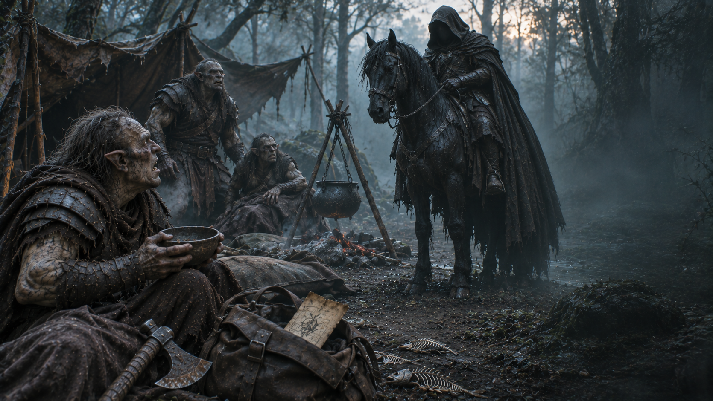

Fin de l’aventure · Désertion
La Dernière Écuelle
La pause était agréable. Le réveil l’est moins.
Découvrir votre sortUne pause définitive
Vous posez votre hache et acceptez le ragoût. Les déserteurs vous expliquent leur plan : marcher vers l’ouest et ne jamais revoir le Mordor. Après une deuxième portion, ce programme vous paraît excellent.
À l’aube, un cri vous réveille. Un Nazgûl se tient à l’entrée du campement. Votre ordre de mission dépasse encore de votre sac. Il comprend vite qui manque à l’appel.
Vous êtes ramené au Mordor, sans Gollum et les mains liées. Votre capitaine vous affecte aux fosses sous la forteresse. Vous n’en reverrez jamais les portes.
Le ragoût aurait mérité un peu plus de sel. Pour un dernier repas tranquille, c’est décevant.